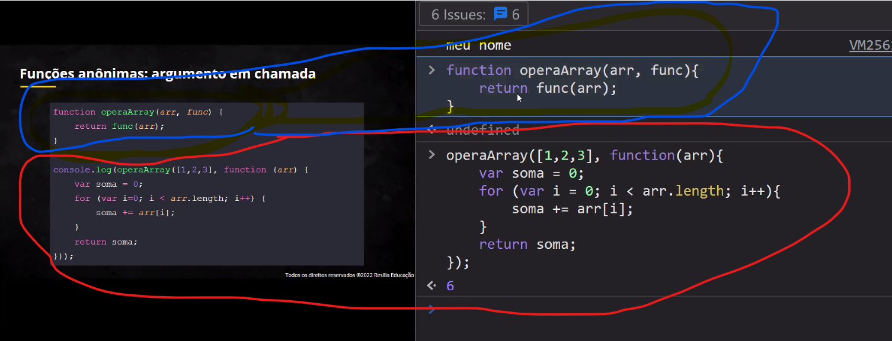

-alguns nomes de propriedades de style são um pouco diferentes no js do que no CSS
local.style.color = red
função se comporta como variavel, ambos serão lidos antes do código ser rodado
propriedade style no js:
-alguns nomes de propriedades de style são um pouco diferentes no js do que no CSS
local.style.color = red
não colocar parentenses quando usa uma função como parâmetro --- e não chamando ela
função se comporta como variavel, ambos serão lidos antes do código ser rodado
podem ser atribuídas à uma variavel ou argumento de uma função
guarda um espaço na memória como variável para a função
usamos a função anonima como parâmetro

----ao invez de ser um parâmetro é a função inteira----
ela não fica armazenada
Eventos: click na página, passeio do mouse, entrada de uma tecla, interações a partir do teclado...